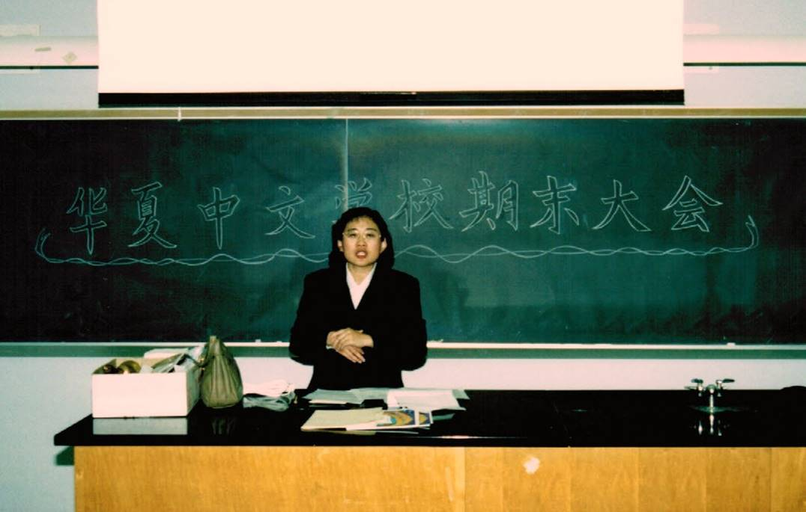
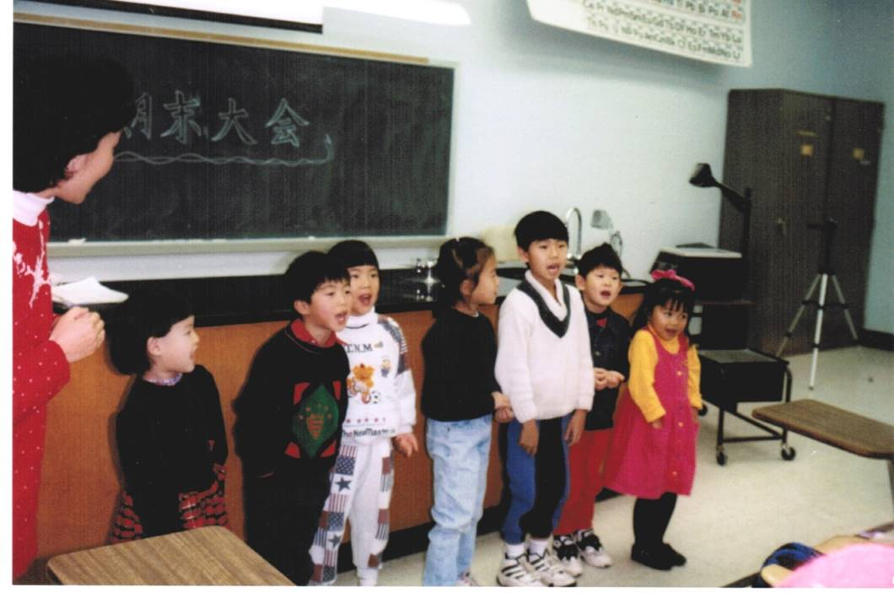
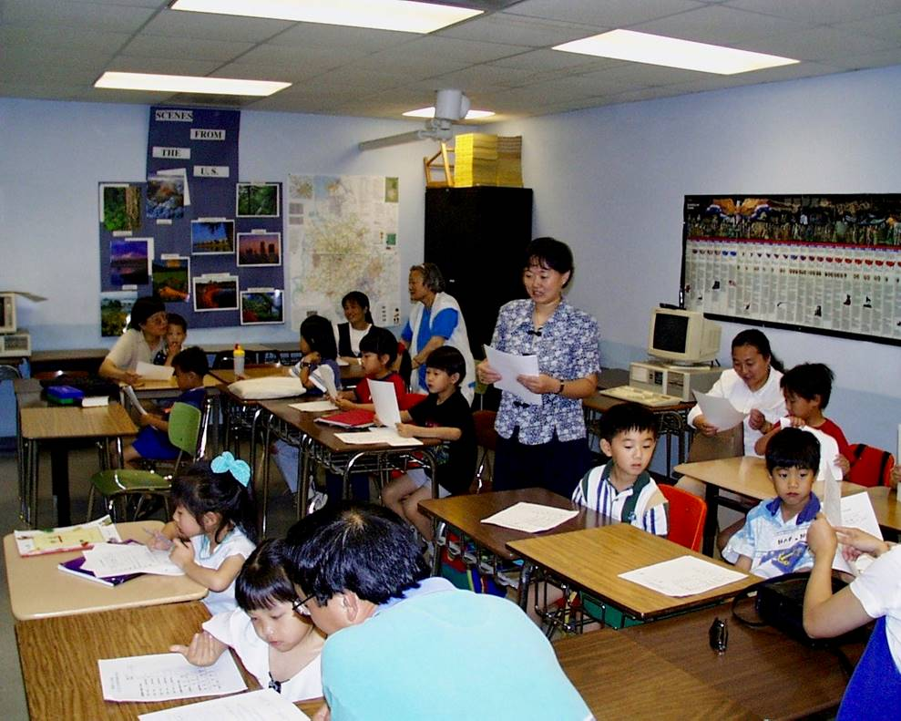
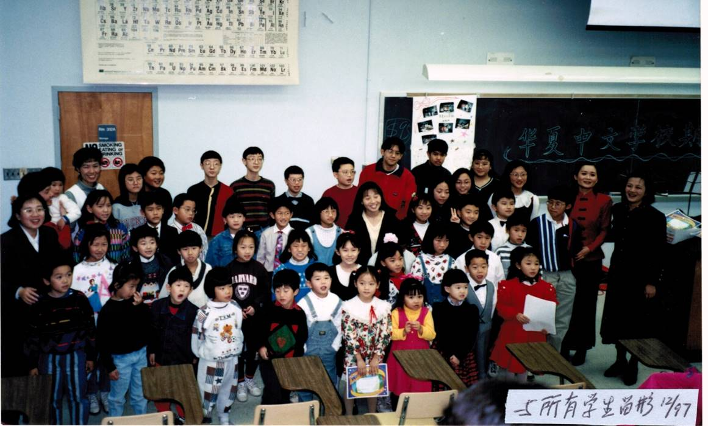
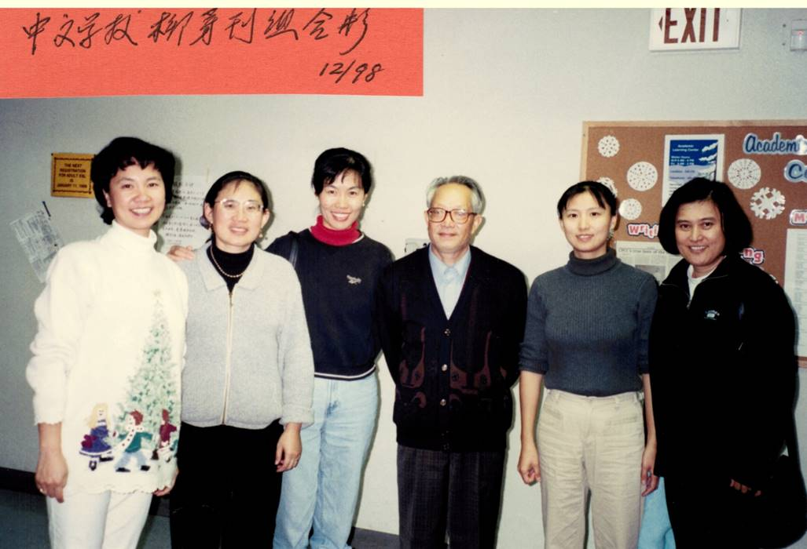
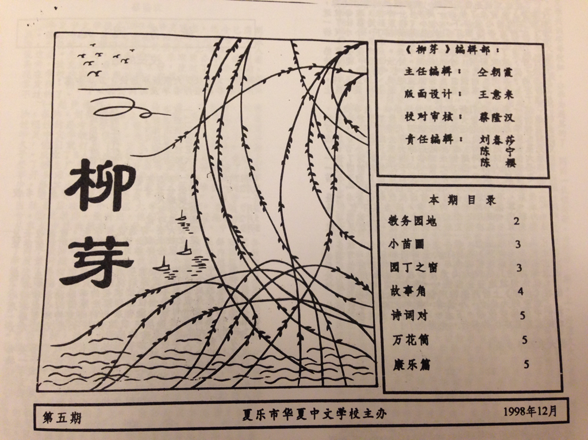
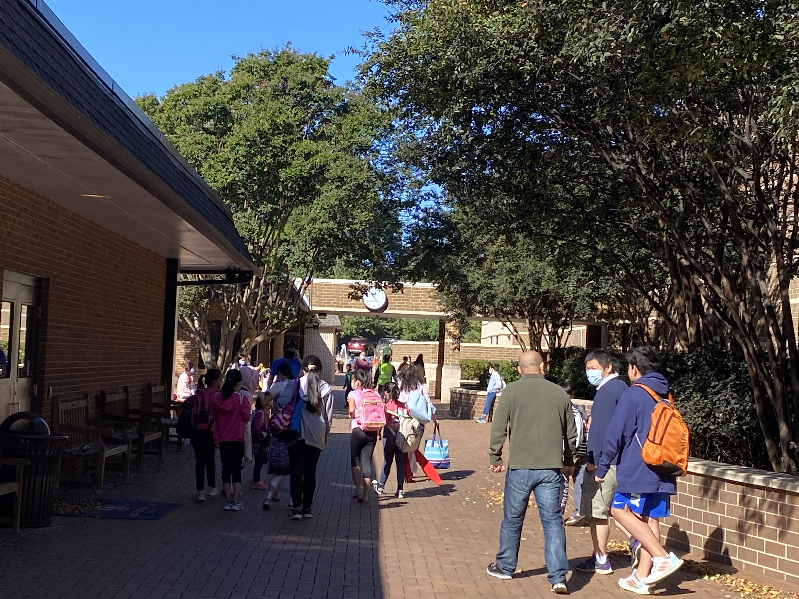
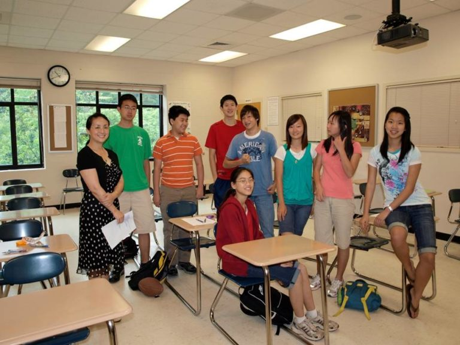
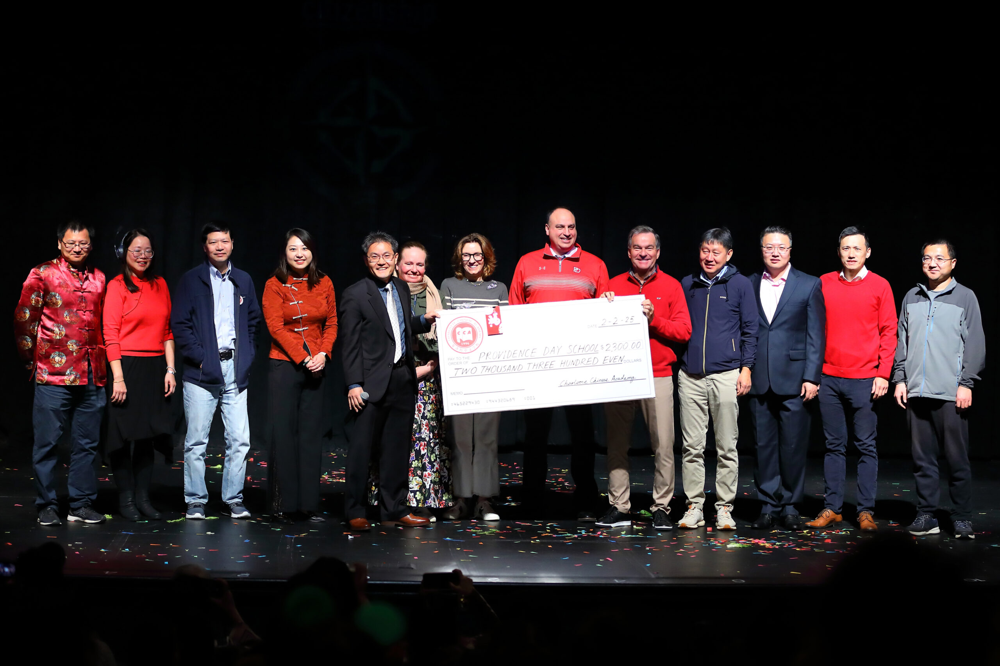
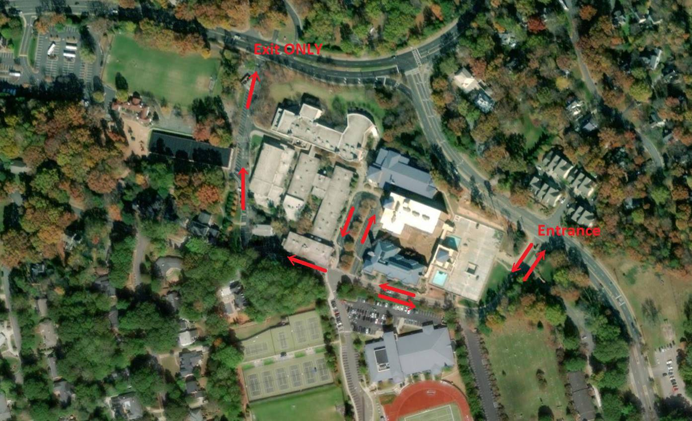

About us · 关于我们
关于夏洛特中文学校
A community built on language, culture, and the belief that every child deserves to know their roots.
Founded in 1996 by Chinese-American families, CCA is a 501(c)(3) nonprofit with 300+ K–12 students who gather every Sunday at Providence Day School, 5800 Sardis Road, Charlotte, NC 28270. We are a certified PVSA organization.
Our story · 我们的故事
On August 27, 1996, three parents — Dr. Wei Cai (蔡伟), Shasha Liu (刘春莎), and Siyuan Tang (唐思源) — opened a weekend school for 15 children who might otherwise grow up without their language. That school is Charlotte Chinese Academy.
Today CCA serves over 300 students across 19 classes — still run entirely by parent volunteers, still meeting every Sunday, still teaching the same belief that brought those first 15 families together.
In 2006, CCA began its partnership with Providence Day School, which has provided classroom space at below-market rates ever since. In return, CCA has become one of PDS's strongest advocates in Charlotte's Chinese community — a relationship built on mutual respect that has held for nearly two decades.
Every teacher is a volunteer. Every council member is a parent. That has never changed.
Charlotte Observer, March 1998 — just 18 months after founding
30 years in the making · 一路走来
CCA is founded
Dr. Wei Cai, Shasha Liu, and Siyuan Tang open a weekend school for 15 children on August 27, 1996 — with one belief: every child deserves to know their language.

Siyuan Tang, first principal · 1997

The first class · 1997

The first class · 1997

First year group photo
First journal 柳芽 published
The community launches 柳芽 (Willow Sprout), CCA's first school journal — a tradition of student voice that reflects the school's growing culture.

The first journal editors · 1998

The first journal, 柳芽 · 1998
Partnership with Providence Day School
CCA begins meeting at Providence Day School on Sardis Road — a partnership built on mutual respect that has held for nearly two decades and given CCA a permanent home.

Providence Day School campus

CCA classrooms at PDS

CCA and PDS partnership

Maps at PDS
Became a PVSA certifying organization
CCA earns the ability to certify President's Volunteer Service Award hours, recognizing the community service our students contribute every year.
New online registration platform
A fully online, paperwork-free registration system launches — making it easier than ever for families to enroll and manage their children's classes.
"Built by parents. Sustained by community. Thirty years and still teaching."
Every teacher a volunteer · Every council member a parent · Every Sunday since 1996
Our mission · 我们的使命
CCA preserves Chinese language so it does not fade with distance or time. A child who speaks Chinese is a bridge between worlds — between generations, between here and home.
Built by parents, run by volunteers, and sustained by a community that believes in what we do.
School council · 学校理事会
CCA's council is made up of parent volunteers who give their time to keep the school running. Member bios are maintained by CCA.
{{ c.roleZh }}
Parent volunteer · 家长志愿者
CCA is a certified PVSA organization. The program was paused in May 2025 due to AmeriCorps changes and will resume when the program restarts — keep tracking your hours in the meantime.
Where are we? · 我们在哪里上课？
5800 Sardis Road
Charlotte, NC 28270
Directions: From I-77, take the Tyvola Road exit and follow Sardis Road. The campus is on the right.
Parking: Free parking is available in the main lot. Enter through the main entrance.
Open in Google Maps →